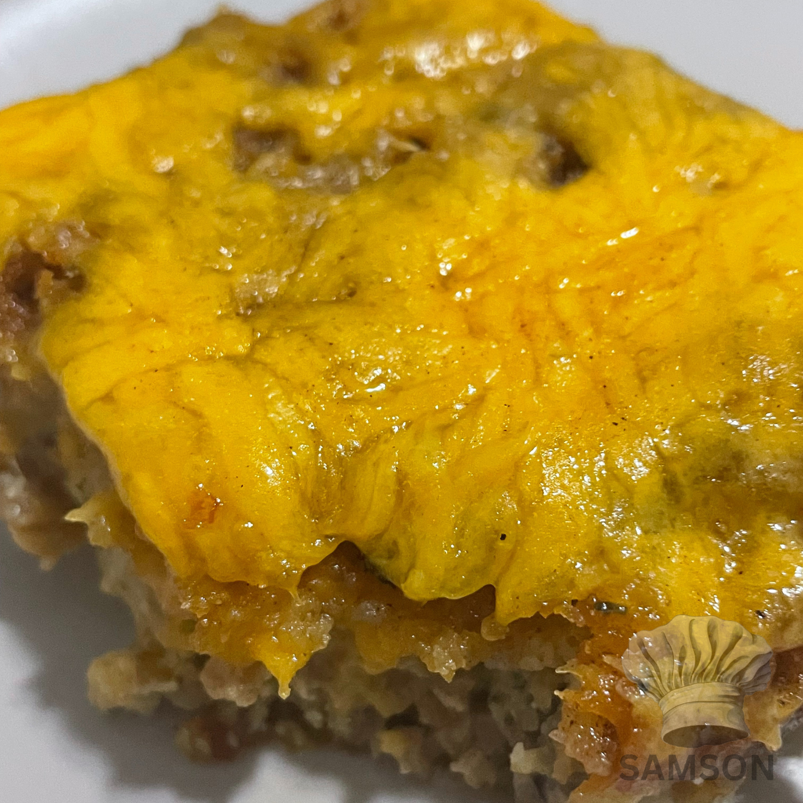
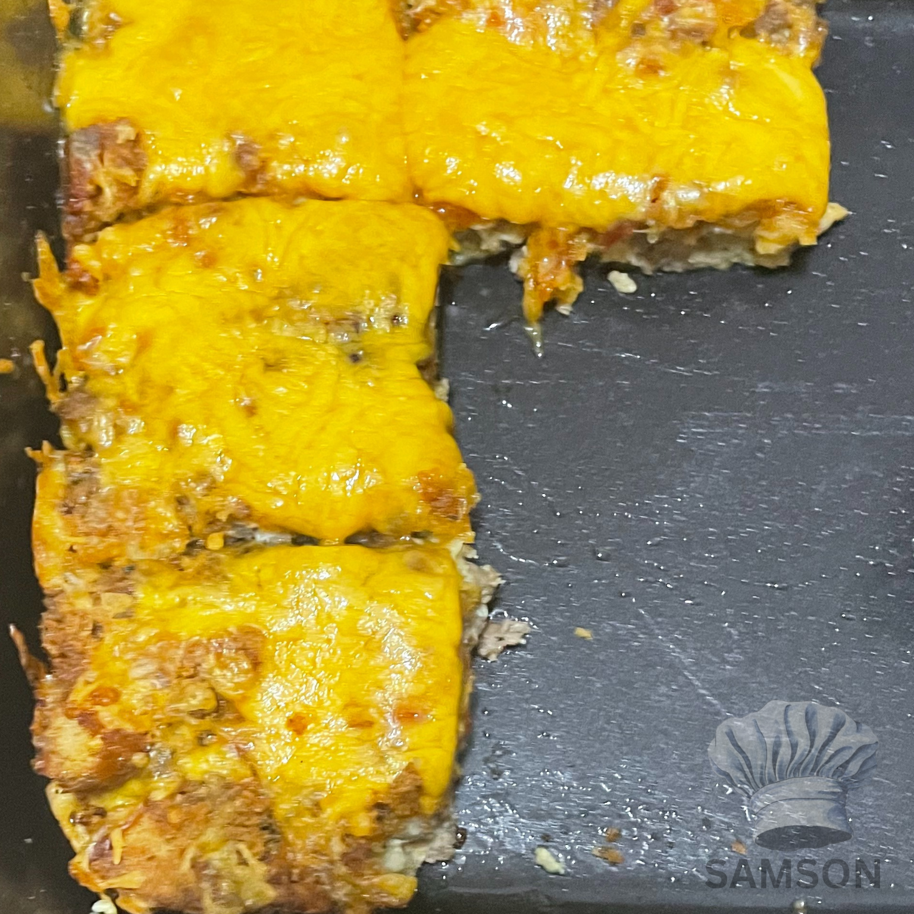
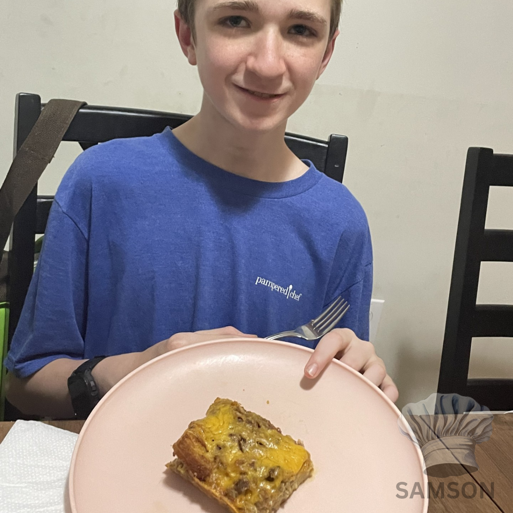
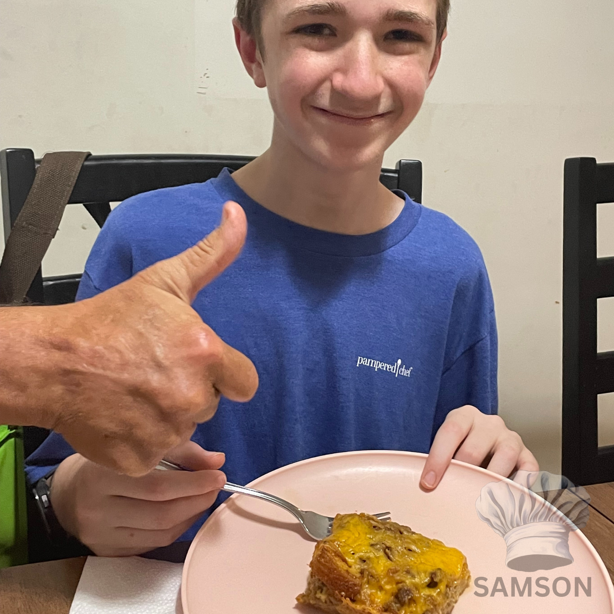

Cheesy Sausage Casserole - Samson Recipes
Cheesy Sausage Casserole
No yeast / No Worcestershire sauce | Takes up to 80 Minutes | Makes 12 Servings
   
Navigation
Time Breakdown
Ingredients
Instructions
Serving Suggestions
Storage
🕒 Time Breakdown:
🛒 Ingredients:
🍳 Instructions:
🍽️ Serving Suggestions:
🗃️ Storage:
Recipe by Elisha Samson
Back to start